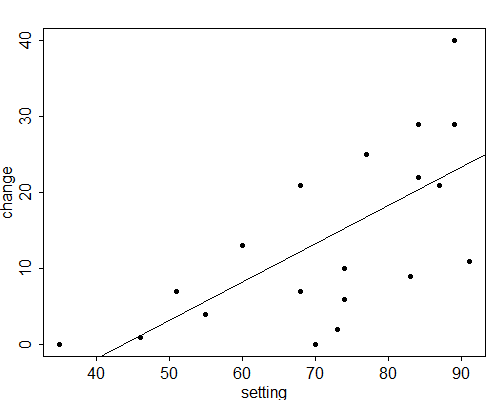

Let us now turn to applications, modelling the dependence of a continuous response \( y \) on a single linear predictor \( x \). In terms of our example, we will study fertility decline as a function of social setting. One can often obtain useful insight into the form of this dependence by plotting the data, as we did in Figure 2.1.
We start by recognizing that the response will vary even for constant values of the predictor, and model this fact by treating the responses \( y_i \) as realizations of random variables
\[\tag{2.14}Y_i \sim N(\mu_i, \sigma^2)\]with means \( \mu_i \) depending on the values of the predictor \( x_i \) and constant variance \( \sigma^2 \).
The simplest way to express the dependence of the expected response \( \mu_i \) on the predictor \( x_i \) is to assume that it is a linear function, say
\[\tag{2.15}\mu_i = \alpha + \beta x_i.\]This equation defines a straight line. The parameter \( \alpha \) is called the constant or intercept, and represents the expected response when \( x_i=0 \). (This quantity may not be of direct interest if zero is not in the range of the data.) The parameter \( \beta \) is called the slope, and represents the expected increment in the response per unit change in \( x_i \).
You probably have seen the simple linear regression model written with an explicit error term as
\[ Y_i = \alpha + \beta x_i + \epsilon_i. \]Did I forget the error term? Not really. Equation 2.14 defines the random structure of the model, and is equivalent to saying that \( Y_i = \mu_i + \epsilon_i \) where \( \epsilon_i \sim N(0,\sigma^2) \). Equation 2.15 defines the systematic structure of the model, stipulating that \( \mu_i = \alpha + \beta x_i \). Combining these two statements yields the traditional formulation of the model. Our approach separates more clearly the systematic and random components, and extends more easily to generalized linear models by focusing on the distribution of the response rather than the distribution of the error term.
The simple linear regression model can be obtained as a special case of the general linear model of Section 2.1 by letting the model matrix \( \boldsymbol{X} \) consist of two columns: a column of ones representing the constant and a column with the values of \( x \) representing the predictor. Estimates of the parameters, standard errors, and tests of hypotheses can then be obtained from the general results of Sections 2.2 and 2.3.
It may be of interest to note that in simple linear regression the estimates of the constant and slope are given by
\[ \hat{\alpha} = \bar{y} - \hat{\beta} \bar{x} \quad\mbox{and}\quad \hat{\beta} = \frac {\sum(x-\bar{x})(y-\bar{y})} {\sum(x-\bar{x})^2}. \]The first equation shows that the fitted line goes through the means of the predictor and the response, and the second shows that the estimated slope is simply the ratio of the covariance of \( x \) and \( y \) to the variance of \( x \).
Fitting this model to the family planning effort data with CBR decline as the response and the index of social setting as a predictor gives a residual sum of squares of 1449.1 on 18 d.f. (20 observations minus two parameters: the constant and slope).
Table 2.3 shows the estimates of the parameters, their standard errors and the corresponding \( t \)-ratios.
Table 2.3. Estimates for Simple Linear Regression
of CBR Decline on Social Setting Score
| Parameter | Symbol | Estimate | Std.Error | \(t\)-ratio |
| Constant | \(\alpha\) | -22.13 | 9.642 | -2.29 |
| Slope | \(\beta\) | 0.5052 | 0.1308 | 3.86 |
We find that, on the average, each additional point in the social setting scale is associated with an additional half a percentage point of CBR decline, measured from a baseline of an expected 22% increase in CBR when social setting is zero. (Since the social setting scores range from 35 to 91, the constant is not particularly meaningful in this example.)
The estimated standard error of the slope is 0.13, and the corresponding \( t \)-test of 3.86 on 18 d.f. is highly significant. With 95% confidence we estimate that the slope lies between 0.23 and 0.78.
Figure 2.4 shows the results in graphical form, plotting observed and fitted values of CBR decline versus social setting. The fitted values are calculated for any values of the predictor \( x \) as \( \hat{y} = \hat{\alpha} + \hat{\beta} x \) and lie, of course, in a straight line.
Figure 2.4 Linear Regression of CBR Decline on Social Setting
You should verify that the analogous model with family planning effort as a single predictor gives a residual sum of squares of 950.6 on 18 d.f., with constant \( 2.336\: (\pm 2.662) \) and slope \( 1.253\: (\pm 0.2208) \). Make sure you know how to interpret these estimates.
Instead of using a test based on the distribution of the OLS estimator, we could test the significance of the slope by comparing the simple linear regression model with the null model. Note that these models are nested, because we can obtain the null model by setting \( \beta=0 \) in the simple linear regression model.
Fitting the null model to the family planning data gives a residual sum of squares of 2650.2 on 19 d.f. Adding a linear effect of social setting reduces the \( \mbox{RSS} \) by 1201.1 at the expense of one d.f. This gain can be contrasted with the remaining \( \mbox{RSS} \) of 1449.1 on 18 d.f. by constructing an \( F \)-test. The calculations are set out in Table 2.4, and lead to an \( F \)-statistic of 14.9 on one and 18 d.f.
Table 2.4. Analysis of Variance for Simple Regression
of CBR Decline on Social Setting Score
| Source of | Degrees of | Sum of | Mean | \(F\)- |
| variation | freedom | squares | squared | ratio |
| Setting | 1 | 1201.1 | 1201.1 | 14.9 |
| Residual | 18 | 1449.1 | 80.5 | |
| Total | 19 | 2650.2 |
These results can be used to verify the equivalence of \( t \) and \( F \) test statistics and critical values. Squaring the observed \( t \)-statistic of 3.86 gives the observed \( F \)-ratio of 14.9. Squaring the 95% two-sided critical value of the Student’s \( t \) distribution with 18 d.f., which is 2.1, gives the 95% critical value of the \( F \) distribution with one and 18 d.f., which is 4.4.
You should verify that the \( t \) and \( F \) tests for the model with a linear effect of family planning effort are \( t=5.67 \) and \( F=32.2 \).
A simple summary of the strength of the relationship between the predictor and the response can be obtained by calculating a proportionate reduction in the residual sum of squares as we move from the null model to the model with \( x \). The quantity
\[ R^2 = 1 - \frac{\mbox{RSS}(x)}{\mbox{RSS}(\phi)} \]is know as the coefficient of determination, and is often described as the proportion of ‘variance’ explained by the model. (The description is not very accurate because the calculation is based on the \( \mbox{RSS} \) not the variance, but it is too well entrenched to attempt to change it.) In our example the \( \mbox{RSS} \) was 2650.2 for the null model and 1449.1 for the model with setting, so we have ‘explained’ 1201.1 points or 45.3% as a linear effect of social setting.
The square root of the proportion of variance explained in a simple linear regression model, with the same sign as the regression coefficient, is Pearson's linear correlation coefficient. This measure ranges between \( -1 \) and \( 1 \), taking these values for perfect inverse and direct relationships, respectively. For the model with CBR decline as a linear function of social setting, Pearson’s \( r = 0.673. \) This coefficient can be calculated directly from the covariance of \( x \) and \( y \) and their variances, as
\[ r = \frac{ \sum(y-\bar{y})(x-\bar{x})} { \sqrt{\sum(y-\bar{y})^2 \sum(x-\bar{x})^2}}. \]There is one additional characterization of Pearson’s \( r \) that may help in interpretation. Suppose you standardize \( y \) by subtracting its mean and dividing by its standard deviation, standardize \( x \) in the same fashion, and then regress the standardized \( y \) on the standardized \( x \) forcing the regression through the origin (i.e. omitting the constant). The resulting estimate of the regression coefficient is Pearson’s \( r \). Thus, we can interpret \( r \) as the expected change in the response in units of standard deviation associated with a change of one standard deviation in the predictor.
In our example, each standard deviation of increase in social setting is associated with an additional decline in the CBR of \( 0.673 \) standard deviations. While the regression coefficient expresses the association in the original units of \( x \) and \( y \), Pearson’s \( r \) expresses the association in units of standard deviation.
You should verify that a linear effect of family planning effort accounts for 64.1% of the variation in CBR decline, so Pearson’s \( r = 0.801 \). Clearly CBR decline is associated more strongly with family planning effort than with social setting.